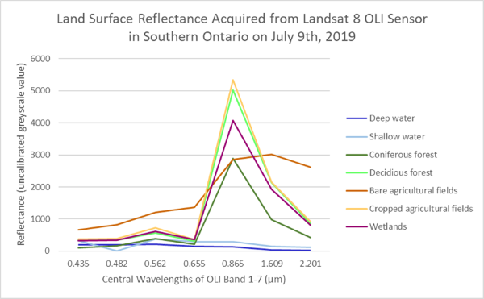

We specialize in collecting and interpreting satellite imagery to glean insights about the Earth's surface. Our analysis supports various critical applications, including environmental monitoring, effective natural resource management, urban planning, and the enhancement of agricultural practices.
For instance, we recently conducted a comprehensive study on land cover types using the Landsat 8 OLI image spanning from Lake Scugog to Bewdley in Southern Ontario. By recording the reflectance values across Bands 1 to 7 during the summer of 2019, we precisely characterized seven distinct land types. The resulting graph vividly illustrates the unique spectral behaviors exhibited by each land type, providing invaluable information for accurate identification, classification, and monitoring purposes.
We specialize in establishing spatial relationships between the coordinate system of an image and a referenced geographic coordinate system, ensuring more accurate locations. This process involves employing various georeferencing techniques and resampling methods.
As an example, we recently conducted a manual georeferencing task by strategically placing ground control points. This process allowed us to perform geometric correction on a Landsat 5 TM imagery capturing Rice Lake in 1992. By aligning the image to the desired geographic coordinates, we ensured the accurate spatial representation of the area, enabling reliable analysis and comparison with other geographic data sets.
Image filtering is a fundamental technique in image processing used to enhance, modify, or extract information from digital images. It involves applying mathematical operations to pixels within an image to achieve specific visual or analytical objectives. Filtering can help highlight certain features, reduce noise, or sharpen details.
In a recent analysis conducted in Stouffville, we explored the spectral profiles of SPOT imagery and its low-pass and high-pass filtered versions. Here is the profile for high-pass imagery, represented using different lines: the original greyscale SPOT panchromatic image in red, while the 3 by 3 and 7 by 7 high-pass filtered images were represented by the green and blue lines, respectively.
This comparison showcased how the high-pass filtering techniques altered the spectral characteristics of the imagery, potentially emphasizing particular features or enhancing specific details for more focused analysis and interpretation.